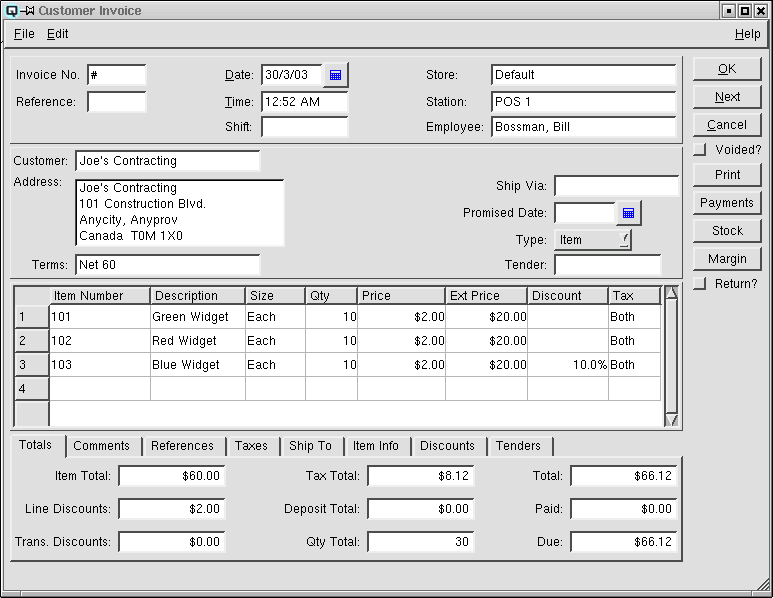
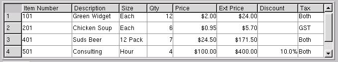
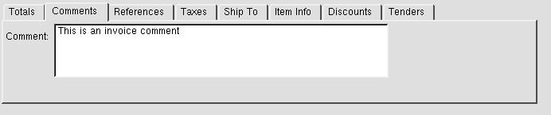
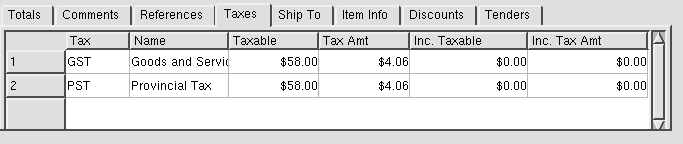
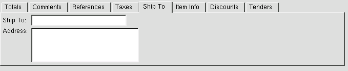
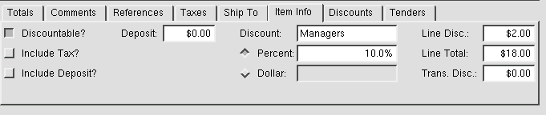
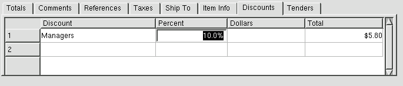
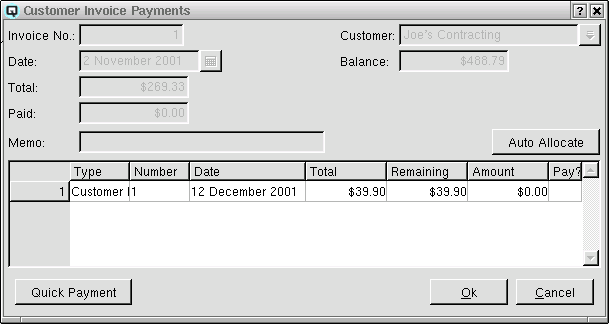
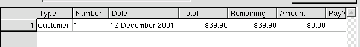

Customer Invoice

Invoice No
The invoice number is incremented by Quasar. This may be changed by
the user. If the invoice number
entered is the same as an existing invoice number then a warning message will be
displayed.
Reference
A number that references the customer invoice. For example, the
customer may provide you with a purchase order number or a job number.
Date
The date for the customer invoice. The date determines the
accounting period in which the customer invoice will be posted.
Time
The time the customer invoice was created.
Shift
The shift that the customer invoice is linked to through a shift
close.
Store
Select or change the default store. If a store has been
defined for the user, then the user's store will display by
default. If no store has been defined for the user, then the
default store specified in the "Quasar Configuration" will be
displayed.
Station
The station (work station) on which the customer invoice is created.
Employee
The employee creating the customer invoice.
Customer
Select or enter the customer whom the invoice is being billed to.
Address
The customers address.
Terms
The payment terms of the invoice. Payment terms default from the customer master file.
Ship Via
Enter the method of shipment.
Promised Date
Enter the date the goods are promised to the customer.
Type
Select either item or account. Select item if the sales invoice
will be used to sell or return items. Select account if the sales
invoice will reflect a direct charge or credit to a ledger account.
Tender
If the invoice will be tendered by a single tender then select the
individual tender. If the invoice will be tendered using multiple
tenders, then use the "Tenders" folder.
Memo
Defines the customer invoice.
Item Entry Table

Use this section to enter items on the customer invoice.
-
- Item Number - The item number of the product or products being sold.
- Description - The description of the product or products
being sold.
- Size - The size of the item.
- Quantity - The quantity of products being sold. A positive
number entered indicates a product purchase. A negative number entered
indicates product a return.
- Price - The price per selling unit for each product being sold.
- Ext Price - The extended price for the items on the
line. The extended price is the gross extended price before discounts.
- Discount - If the discount is a percent discount then the
percentage will be displayed. If the discount is a dollar discount,
then the total dollar amount will be displayed. Line discounts are
selected in the "Item Info" folder.
- Tax - The selling tax code for the item. This is defaulted
from the data entered in item master window. However, the tax code may
be changed by the user.
Totals

The totals folder displays the various totals for the customer
invoice:
-
- Item Total - The net item total before discounts and taxes.
- Line Discounts - The total of all line discounts.
- Trans Discounts - The total of all transaction discounts.
- Tax Total - The accumulated total of all taxes.
- Deposit Total - The total of all container deposits.
- Total - The gross total for the customer invoice.
- Paid - The amount of all payments allocated to the
customer invoice.
- Due - The net balance due on the customer invoice after
all payments.
Comments

Any comments relevant to the invoice. All comments will be printed
on the hard copy of the customer invoice.
References

Displays the compulsary references entered.
Taxes

Quasar display a breakdown of the individual taxes.
-
- Tax - The tax id.
- Name - The name of the tax.
- Taxable - The net base amount that a given tax is charged to.
- Tax Amt - The amount of tax allocated to the "Taxable" amount.
- Inc. Taxable - The net base taxable amount including the amount of the tax. (for items with taxes included in the price)
- Inc. Tax Amt - The net amount of tax calculated from the "Inc. Taxable" amount.
Ship To

Where products are shipped to a card or address other than
the customers address the ship to address can be entered here. The
ship to address is printed on the hard copy of the customer invoice.
-
- Ship To - Enter or select a card if different
from the customer.
- Address - Enter the new shipping address.
Item Info

The item info folder displays specific information about an
individual item(line) in the invoice. The information displayed will
pertain to the line in which the cursor is placed. Line discounts are
taken using the item info folder.
-
- Discountable? - Displays whether or not a discount may be
taken on an item.
- Include Tax? - Displays if the price of the item includes
taxes.
- Include Deposit? - Displays if the price of the item
includes a container deposit.
- Tax - The accumulation of all taxes on the line.
- Deposit - The total of the container deposits on the
line.
- Discount - Select the discount for to take a line
discount.
- Percent - Toggle on or off. Toggle on if the line discount
will be a percentage discount.
- Dollar - Toggle on or off. Toggle on if the line discount
will be a dollar discount.
- Line Disc. - Displays the total amount of a line discount.
- Line Total - Displays the gross total for the line.
- Trans Disc. - Displays total amount of transaction
discounts allocated back to the line.
Discounts

The discounts folder is used to define transaction
discounts.
-
- Discount - Enter or select the discount id.
from the customer.
- Percent - Enter a percentage discount. For example "10%"
off.
- Dollars - Enter a dollar discount. For example, "$1.00"
off.
- Total - The total of the discount.
Tenders

The tenders folder is used to define multiple tenders.
-
- Tender - Enter or select the tender.
- Amount - Enter the amount of the tender.
- Rate - Quasar displays the conversion rate for foreign
currency.
- Total - The total of the tender.
Voided?
Toggle on or off. Toggle off to void the invoice. Toggle on to
re-set the invoice to non-voided.
Print
Click on the print button to print a hard copy of the customer
invoice.
Payments
Click on the "Payments" button to take a customer payment and/or
allocate a payment or return to an invoice. Clicking on "Payment" will
cause the "Invoice Payment" window to be displayed. This window will
display all transactions that can be allocated to the invoice.
Invoice Payment

If there are no transactions that can be allocated towards the payment of
the invoice the body of the window will be blank. If there is a return
or a credit that can be allocated to the invoice the details will be
dispayed in the body of the window.
Invoice Number
The invoice number for the invoice that you are paying or allocating a
return or payment too. Note! you may also allocate an invoice to a
return.
Date
The date of the invoice.
Total
The Total amount of the invoice.
Paid
The amount of the invoice that has previously been paid.
Memo
The memo for the invoice. This memo displays on the journal
transaction for the invoice.
Customer
The customer who the invoice is charged too.
Balance
The current balance of the customers receivable account.
Auto Allocate
Click on the "Auto Allocate" button to automatically allocate to the
invoice.
Invoice Table

The inoice table displays all credits, returns or invoices that
can be allocated back to the vendor invoice.
-
- Type - The type of transaction. For example, Invoice or
Payment.
- Number - The number of the transaction that may be allocated
against the invoice.
- Number - The number of the transaction that may be
allocated against the invoice.
- Date - The date of the transaction that may be allocated
against the invoice.
- Total The total amount of the transaction.
- Remaining - The remaining amount of the transaction that
may be allocated.
- Amount - The amount of the transaction that you wish to
allocate to the invoice.
- Pay Toggle on or off. Toggle on to allocate the total
amount of the transaction to the invoice.
Quick Payment
Click on the "Quick Payment" button to create a payment for the
invoice using the "Customer Payments" window.
Stock
Click on the "Stock" button to review the stock status of the item in
the line in which you are working
Margin
Click on the "Margin" button to view the cost and margin information
for the item you are selling.